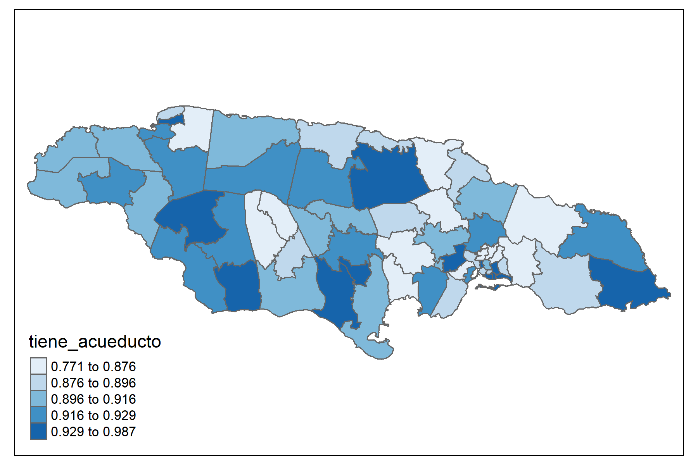
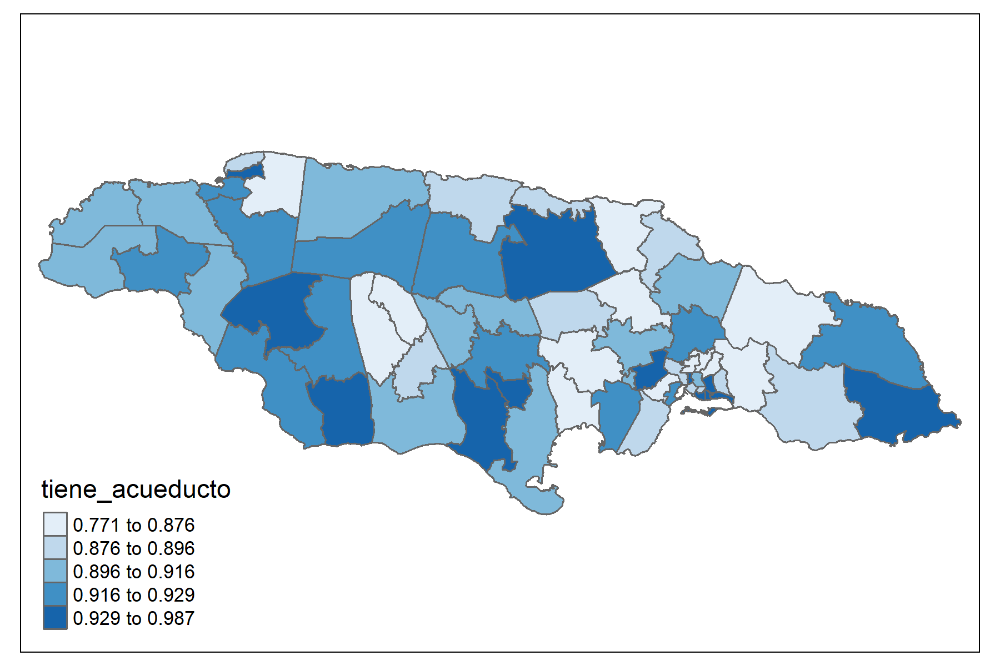

1.5 Population and Housing Censuses
It’s necessary to define the variables for the country you want to work with. As a first step, access to the country’s census data is required. You can access it from the following link: https://redatam.org/en/microdata, where you’ll find a .zip file with the microdata for the country. To read this dataset, you’ll need to use the redatam.open function from the redatam library. This function directly depends on the census dictionary from REDATAM software, which is a file with a .dicx extension and should be located in the same folder as the data being read. This is how an object is created within R that merges the dictionary with the microdata from the census database. After performing a process in R using REDATAM syntax, we have the following table:
| dam2 | area1 | sex2 | age2 | age3 | age4 | age5 | tiene_sanitario | tiene_electricidad | tiene_acueducto | tiene_gas | eliminar_basura | tiene_internet | material_paredes | material_techo | TRANMODE_PRIVATE_CAR | ODDJOB | WORKED |
|---|---|---|---|---|---|---|---|---|---|---|---|---|---|---|---|---|---|
| 0101 | 1.0000 | 0.5087 | 0.2694 | 0.2297 | 0.1689 | 0.0672 | 0.0019 | 0.7596 | 0.9545 | 0.7728 | 0.7804 | 0.9453 | 0.0095 | 0.7589 | 0.1472 | 0.0090 | 0.3488 |
| 0102 | 1.0000 | 0.4754 | 0.2857 | 0.2261 | 0.1527 | 0.0683 | 0.0011 | 0.9064 | 0.9867 | 0.9181 | 0.9084 | 0.9882 | 0.0007 | 0.9060 | 0.0680 | 0.0126 | 0.2859 |
| 0103 | 1.0000 | 0.5037 | 0.3095 | 0.2015 | 0.1312 | 0.0449 | 0.0152 | 0.6930 | 0.9741 | 0.7440 | 0.7362 | 0.9712 | 0.0028 | 0.6942 | 0.0491 | 0.0135 | 0.2819 |
| 0201 | 0.5147 | 0.5060 | 0.2962 | 0.2090 | 0.1844 | 0.0711 | 0.0138 | 0.2342 | 0.8546 | 0.2955 | 0.6589 | 0.8386 | 0.0159 | 0.2215 | 0.1709 | 0.0077 | 0.3647 |
| 0202 | 0.9986 | 0.5376 | 0.2625 | 0.2226 | 0.2238 | 0.0961 | 0.0028 | 0.3852 | 0.8236 | 0.4958 | 0.4138 | 0.6884 | 0.0014 | 0.5081 | 0.4489 | 0.0046 | 0.4512 |
| 0203 | 0.9754 | 0.5432 | 0.2454 | 0.2254 | 0.2388 | 0.1160 | 0.0015 | 0.3326 | 0.7915 | 0.4864 | 0.3495 | 0.5945 | 0.0014 | 0.5135 | 0.5314 | 0.0042 | 0.4880 |
| 0204 | 1.0000 | 0.5300 | 0.3151 | 0.2022 | 0.2034 | 0.0776 | 0.0042 | 0.5720 | 0.8835 | 0.6198 | 0.6166 | 0.7998 | 0.0016 | 0.5975 | 0.3197 | 0.0071 | 0.4125 |
| 0205 | 1.0000 | 0.5182 | 0.3057 | 0.2286 | 0.1981 | 0.0768 | 0.0013 | 0.8060 | 0.9590 | 0.8347 | 0.8130 | 0.9091 | 0.0030 | 0.8234 | 0.3291 | 0.0068 | 0.4559 |
| 0206 | 1.0000 | 0.5157 | 0.3192 | 0.1959 | 0.1552 | 0.0496 | 0.0290 | 0.0285 | 0.8879 | 0.1433 | 0.1516 | 0.9034 | 0.0258 | 0.0320 | 0.0639 | 0.0139 | 0.2914 |
| 0207 | 1.0000 | 0.5097 | 0.3099 | 0.1966 | 0.1691 | 0.0538 | 0.0465 | 0.1581 | 0.8925 | 0.2551 | 0.2337 | 0.9198 | 0.0162 | 0.1512 | 0.0717 | 0.0169 | 0.3121 |


 
